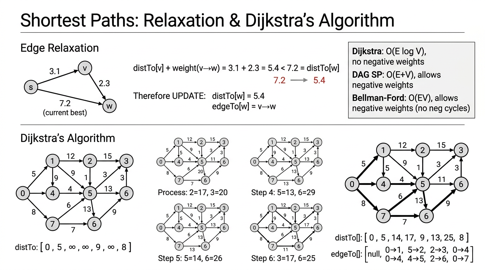

Shortest Paths — COMP0005 Algorithms¶
Lecture-style notes on single-source and related shortest-path problems on edge-weighted digraphs, relaxation, and the main algorithms (DAG, Dijkstra, Bellman–Ford).
1. COMPLETE TOPIC SUMMARIES¶
Problem variants¶
- Source–sink: find a shortest path from a fixed start vertex \(s\) to a fixed target \(t\). Often solved by running a single-source algorithm and reading off \(\texttt{distTo}[t]\) (or stopping early if the algorithm allows).
- Single-source: shortest path from \(s\) to every other vertex. This is the standard setup for Dijkstra, DAG shortest paths, and Bellman–Ford.
- All-pairs: shortest paths between all ordered pairs \((u,v)\). Can repeat a single-source method \(V\) times, or use specialised methods (e.g. Floyd–Warshall — not detailed here).
Simplifying assumption (for exposition): shortest paths from \(s\) to each reachable vertex exist. That fails if a negative cycle reachable from \(s\) allows arbitrarily small path cost; algorithms must detect or assume that away.
Edge-weighted digraph representation¶
- Use an adjacency list: each vertex \(v\) has a list of outgoing edges.
- A directed edge \(\texttt{DirectedEdge}(v,w,\text{weight})\) goes from \(v\) to \(w\).
EdgeWeightedDigraph.addEdge(e)appends \(e\) only toadj[from]— not to both endpoints (unlike undirected graphs).
Shortest paths tree (SPT)¶
For a fixed source \(s\), if shortest paths are well-defined, the union of one shortest path to each reachable vertex forms a shortest-paths tree rooted at \(s\) (a tree in the graph-theoretic sense on reachable vertices).
Data structures:
- \(\texttt{distTo}[v]\): length of the current best known path from \(s\) to \(v\) (often initialised to \(+\infty\) except \(\texttt{distTo}[s]=0\)).
- \(\texttt{edgeTo}[v]\): the last edge on that best path (from some \(u\) into \(v\)).
Reconstructing a path to \(v\): follow \(\texttt{edgeTo}\) from \(v\) back toward \(s\); a stack reverses the order to print \(s \leadsto v\).
Edge relaxation¶
Relaxation is the atomic step of shortest-path algorithms.
For edge \(e\) from \(v\) to \(w\) with weight \(w_e\):
- If \(\texttt{distTo}[v] + w_e < \texttt{distTo}[w]\), then going via \(v\) is better; update \(\texttt{distTo}[w]\) and set \(\texttt{edgeTo}[w] = e\).
def relax(e):
v = e.from()
w = e.to()
if distTo[v] + e.weight() < distTo[w]:
distTo[w] = distTo[v] + e.weight()
edgeTo[w] = e
Invariant (when weights are handled correctly): \(\texttt{distTo}[v]\) is always the length of some path from \(s\) to \(v\) (or \(\infty\) if none known yet).
Generic algorithm¶
- Initialise \(\texttt{distTo}[s] = 0\), \(\texttt{distTo}[v] = +\infty\) for \(v \neq s\), and \(\texttt{edgeTo}\) appropriately.
- Repeat: relax any edge \(v \to w\) that is tense, i.e. \(\texttt{distTo}[v] + w_{vw} < \texttt{distTo}[w]\).
- Design question: which edge to relax next, and how many relaxations are needed?
Different algorithms = different order of relaxation + termination guarantees under different assumptions.

{kind=link}
Dijkstra’s algorithm¶
Assumption: all edge weights are non-negative (\(\geq 0\)).
Idea: maintain a set of vertices whose shortest distance from \(s\) is final. Repeatedly pick the closest unfinalised vertex \(v\), declare it final, and relax all edges out of \(v\).
Implementation: a min-indexed priority queue on vertices keyed by \(\texttt{distTo}\).
class DijkstraSP:
def __init__(self, G, s):
self.edgeTo = [None] * G.V()
self.distTo = [INFINITY] * G.V()
self.distTo[s] = 0
self.pq = MinPQ()
self.pq.insert(s, 0)
while not self.pq.isEmpty():
v = self.pq.delMin()
for e in G.adj(v):
self.relax(e)
def relax(self, e):
v = e.from(); w = e.to()
if self.distTo[w] > self.distTo[v] + e.weight():
self.distTo[w] = self.distTo[v] + e.weight()
self.edgeTo[w] = e
if self.pq.contains(w):
self.pq.decreaseKey(w, self.distTo[w])
else:
self.pq.insert(w, self.distTo[w])
Complexity:
- Binary heap: \(O(E \log V)\) — each edge may cause one decrease-key/insert;
delMinis \(O(\log V)\). - Array (linear scan for min): \(O(V^2)\) — can be better for dense graphs where \(E \approx V^2\).
Shortest paths in an edge-weighted DAG¶
Assumption: the graph is a DAG (no directed cycles).
Idea: take a topological order of vertices. Visit vertices in that order; for each \(v\), relax all outgoing edges. When you reach \(v\), all incoming updates from earlier vertices are already done.
class AcyclicSP:
def __init__(self, G, s):
self.edgeTo = [None] * G.V()
self.distTo = [INFINITY] * G.V()
self.distTo[s] = 0
topological = DepthFirstOrder(G).reverse()
while not topological.isEmpty():
v = topological.pop()
for e in G.adj(v):
self.relax(e)
Complexity: \(O(V + E)\) — dominated by topological sort plus one pass over edges.
Negative weights: allowed — there are no cycles to accumulate unbounded benefit from, so the topological pass is still correct.
Why Dijkstra fails with negative edges¶
Dijkstra finalises \(\texttt{distTo}[v]\) when \(v\) is removed from the PQ as the current minimum. That is only safe if no future edge can offer a cheaper route to an already-finalised vertex.
With a negative edge, a path that looked worse earlier can become optimal after more edges — so “locking in” the minimum too early is wrong.
Why “add a constant to all weights” fails: paths with different numbers of edges change by different totals (\(k\) edges shift by \(k \cdot c\)), so comparing path lengths after such a shift distorts the ordering of paths.
Negative cycles¶
A negative cycle is a directed cycle whose total weight is \(< 0\).
If such a cycle is reachable from \(s\), shortest path distance is not well-defined (you can loop the cycle to make path length arbitrarily small). No finite SPT captures “shortest” in that case.
Bellman–Ford algorithm¶
Assumption: no negative cycles reachable from \(s\) (negative edges are OK).
Idea: repeat \(V\) rounds: in each round, relax every edge. After round \(k\), paths using at most \(k\) edges are accounted for; after \(V-1\) rounds, shortest simple paths (at most \(V-1\) edges) are found. The \(V\)-th pass detects improvement only if a negative cycle exists.
distTo = [INFINITY] * G.V()
distTo[s] = 0
for i in range(G.V()):
for v in range(G.V()):
for e in G.adj(v):
relax(e)
Complexity: \(O(V \cdot E)\).
Queue-based (SPFA-style) improvement: maintain a queue of vertices whose \(\texttt{distTo}\) changed; only relax edges out of those vertices. Typical behaviour can be much better (\(O(E+V)\)-ish on many inputs), but worst case remains \(O(V \cdot E)\).
Summary table¶
| Algorithm | Restriction | Typical | Worst | Extra space |
|---|---|---|---|---|
| DAG (topological) | No cycles | \(O(V+E)\) | \(O(V+E)\) | \(O(V)\) |
| Dijkstra (binary heap) | No negative weights | \(O(E \log V)\) | \(O(E \log V)\) | \(O(V)\) |
| Bellman–Ford | No negative cycles | \(O(VE)\) | \(O(VE)\) | \(O(V)\) |
| Bellman–Ford (queue) | No negative cycles | often \(\approx O(V+E)\) | \(O(VE)\) | \(O(V)\) |
2. EXAM-STYLE QUESTIONS (WITH MODEL ANSWERS)¶
Q1 — When is Dijkstra’s greedy choice valid?¶
Question: State the edge-weight assumption under which Dijkstra’s algorithm is correct. Give a small example (sketch) where Dijkstra fails if that assumption is violated.
Model answer: Dijkstra requires non-negative edge weights. If some weight is negative, the vertex with smallest tentative distance might be finalised too early: a longer-looking path can later be shortened by a negative edge. Example pattern: \(s \to a\) weight \(1\), \(s \to b\) weight \(10\), \(b \to a\) weight \(-20\); the true shortest distance to \(a\) may go through \(b\), but Dijkstra may process \(a\) before discovering the cheaper route.
Q2 — DAG shortest paths vs Dijkstra¶
Question: The DAG algorithm runs in \(O(V+E)\) and can use negative weights. Dijkstra runs in \(O(E \log V)\) and cannot. Explain conceptually why the DAG restriction buys both speed and tolerance for negative weights.
Model answer: In a DAG, a topological order ensures that when we process \(v\), no path to \(v\) can be improved by vertices later in the order — there are no back-edges along any path. So one relaxation pass in order is enough. Negative edges cannot create “revisit and improve” cycles. Dijkstra’s proof relies on non-negativity so that the smallest tentative distance cannot later be undercut by unexplored vertices.
Q3 — Bellman–Ford rounds¶
Question: Why does the textbook Bellman–Ford loop run about \(V\) times? What does an extra improvement on the \(V\)-th pass indicate?
Model answer: Any simple shortest path has at most \(V-1\) edges. Each outer iteration allows paths that use one more edge to propagate relaxations. After \(V-1\) iterations, all simple-path shortest distances stabilise if no negative cycle exists. If some edge can still be relaxed on iteration \(V\), distances can keep decreasing indefinitely along a negative cycle, so the graph has a negative cycle reachable from the source (in the standard detection setup).
Q4 — Negative cycle and well-defined shortest paths¶
Question: Define a negative cycle. Why does the existence of a negative cycle reachable from \(s\) mean there is no well-defined shortest path distance to some vertices?
Model answer: A negative cycle is a directed cycle whose total weight is strictly less than zero. If reachable from \(s\), append that cycle \(k\) times to any path ending on the cycle: total weight decreases without bound as \(k \to \infty\). So “shortest” is not a finite minimum — only minimum walk might be \(-\infty\) in principle.
Q5 — Complexity comparison¶
Question: Compare Dijkstra (binary heap) and Bellman–Ford in big-\(O\) worst-case time. When might you prefer Bellman–Ford despite worse asymptotic worst case?
Model answer: Dijkstra with a binary heap is \(O(E \log V)\) for non-negative weights. Bellman–Ford is \(O(VE)\). Prefer Bellman–Ford when negative edges may appear but negative cycles do not (or you need to detect them). Also, queue-based Bellman–Ford can be fast in practice on sparse “easy” graphs even though worst case stays \(O(VE)\).
3. MUST-KNOW KEY POINTS¶
- Relaxation: \(\texttt{distTo}[w] \gets \min(\texttt{distTo}[w],\, \texttt{distTo}[v] + w_{vw})\), updating \(\texttt{edgeTo}[w]\) when improved.
- SPT: \(\texttt{edgeTo}\) + \(\texttt{distTo}\) encode a tree of shortest paths from \(s\) when the model is well-posed.
- Dijkstra: non-negative weights; grow finalised set by smallest \(\texttt{distTo}\); \(O(E \log V)\) with a binary heap.
- DAG SP: topological order + relax outgoing edges; \(O(V+E)\); negative weights OK.
- Why not shift weights: adding a constant to every edge does not preserve shortest-path order across paths of different lengths.
- Negative cycle: breaks finite shortest paths when reachable from \(s\).
- Bellman–Ford: \(V\) rounds of relaxing all edges; \(O(VE)\); handles negative edges if no negative cycles; \(V\)-th improvement \(\Rightarrow\) negative cycle (standard detection narrative).
4. HIGH-PRIORITY TOPICS¶
🔴 Must know¶
- Definitions: single-source, SPT, relaxation, tense edge
- Dijkstra: assumption (non-negative), greedy invariant, heap vs array complexity
- DAG algorithm: topological order, \(O(V+E)\), negative weights allowed
- Failure modes: Dijkstra + negative edges; negative cycles and undefined distances
- Bellman–Ford: triple loop structure, \(O(VE)\), role of \(V\) iterations, negative-cycle detection idea
🟡 Important¶
- Edge-weighted digraph API:
addEdgeonly on from-vertex’s adjacency list - pathTo via \(\texttt{edgeTo}\) and a stack
- Generic algorithm: “relax until no tense edges” — algorithms differ by order
- Practical Bellman–Ford: queue of changed vertices (better typical, same worst case)
- Dense vs sparse: when \(O(V^2)\) Dijkstra can beat \(O(E \log V)\)
🟢 Useful but lower priority¶
- All-pairs as “run single-source \(V\) times” (conceptual bridge)
- Constant factors in PQ operations vs theoretical bounds
- Early termination variants for Dijkstra when only \(t\) is needed (conceptual)
5. TOPIC INTERCONNECTIONS & BIGGER PICTURE¶
flowchart LR
subgraph problems [Problem shape]
SS[Single-source]
ST[Source-sink]
AP[All-pairs]
end
subgraph structure [Graph structure]
DAG[DAG]
GEN[General digraph]
end
subgraph methods [Algorithms]
TOPSORT[Topological SP]
DIJ[Dijkstra]
BF[Bellman-Ford]
end
SS --> ST
SS --> AP
DAG --> TOPSORT
GEN --> DIJ
GEN --> BF
TOPSORT -->|negative weights OK| BF
DIJ -->|needs nonneg weights| BF
Narrative: Almost all shortest-path machinery is relaxation plus a smart order of processing vertices/edges. Topological order exploits acyclicity for a single \(O(V+E)\) sweep. Dijkstra exploits non-negativity for a best-first order with a priority queue. Bellman–Ford drops both assumptions (except banning negative cycles) and pays with \(O(VE)\) worst-case robustness. Negative cycles are the fundamental obstruction to well-defined shortest paths.
This topic closes the loop with earlier course material: topological sort and DFS-based ordering feed the DAG shortest path algorithm; priority queues and graph representations from ADTs/heaps underpin Dijkstra.
6. EXAM STRATEGY TIPS¶
- For “which algorithm?” questions, write a checklist: negative edges? negative cycles? DAG? non-negative? — then match to DAG / Dijkstra / Bellman–Ford.
- When asked for correctness, anchor on relaxation invariants and what ordering guarantees that no future update can violate a finalised distance.
- Counterexamples beat long prose: one 3–4 vertex digraph with a single negative edge often suffices to break Dijkstra.
- Big-\(O\): state whether the heap or array PQ is assumed; mention dense \(E \approx V^2\) vs sparse graphs for Dijkstra variants.
- Negative cycles: be precise — “reachable from \(s\)” matters for single-source pathology.
- In trace questions, maintain \(\texttt{distTo}\) and \(\texttt{edgeTo}\) (or show PQ contents) step by step; examiners reward clear tables.
Course context: COMP0005 Algorithms — aligns with Sedgewick/Wayne-style treatment of shortest paths on edge-weighted digraphs.